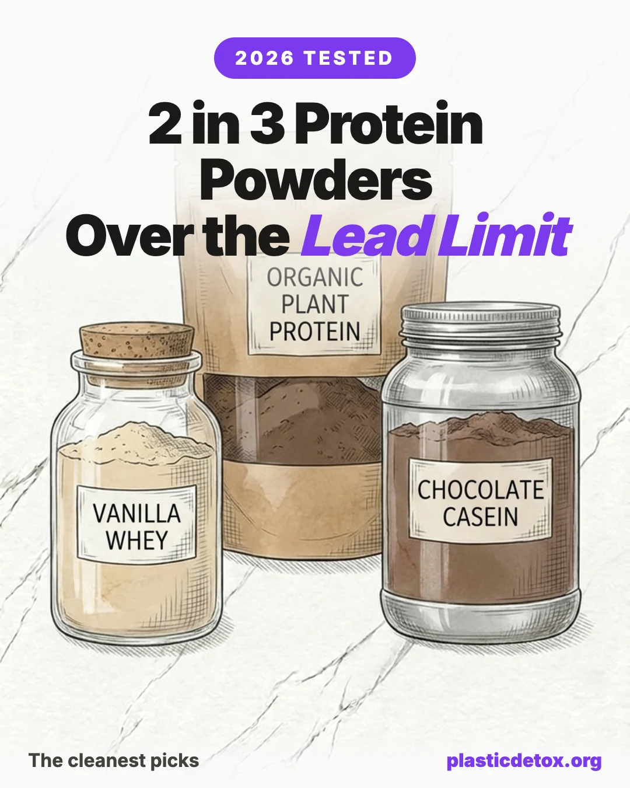

Supplements Guide
The Cleanest Protein Powders: Lowest in Lead and Heavy Metals (2026, Independently Tested)
Save

The 30 Second Summary
- The problem is lead, and it is widespread. Consumer Reports tested 23 protein powders in October 2025 and found more than two thirds exceeded California's daily lead threshold. Clean Label Project's 160 powder screen found 65 percent of chocolate powders over the Prop 65 lead threshold.
- Whey isolate is the lowest risk category. Whey tested lower for lead and cadmium than plant based and chocolate flavored powders. Cocoa and plant proteins concentrate metals from soil.
- Our overall pick: Transparent Labs Grass Fed Whey Isolate. Per batch certificates of analysis with a public lot lookup, Informed Protein certified.
- Best farm direct: ProMix Grass Fed Whey Isolate, single source California farms with a per lot COA lookup for heavy metals and glyphosate, no lawsuits, no recalls.
- Skip: chocolate plant based powders in plastic tubs, and any brand with active heavy metals litigation on any SKU.
- Nobody tests the plastic tub. Every screen above measures heavy metals, not microplastics. Buy smaller quantities, rotate sources, and transfer to glass at home.
We independently test everyday products and publish the results free.
Support the testing →
Custom Plan →